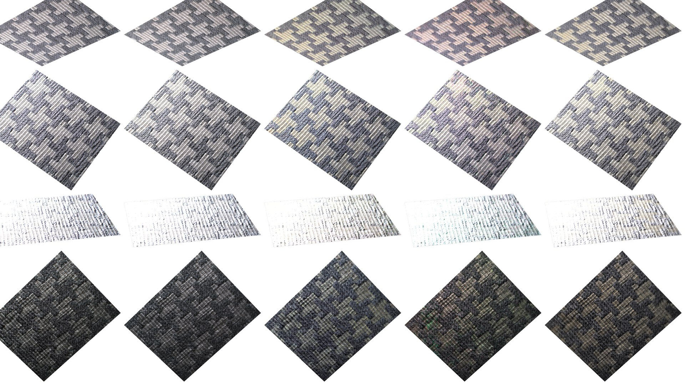
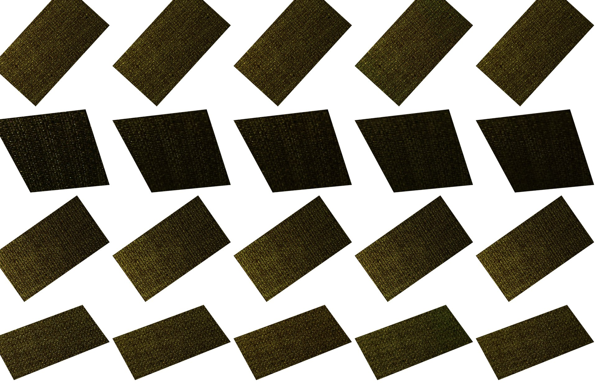
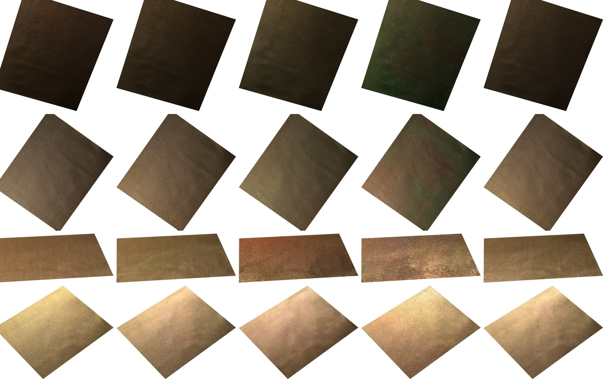
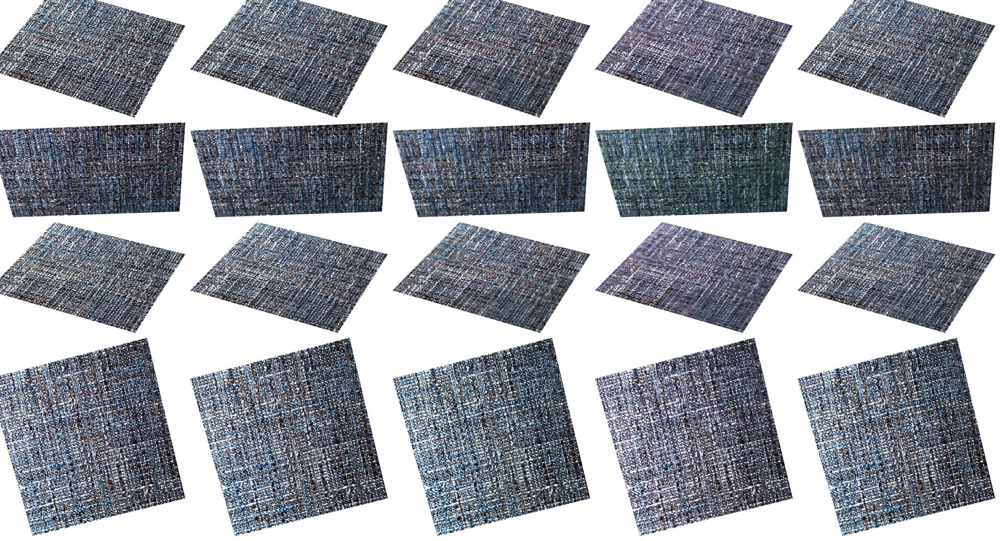
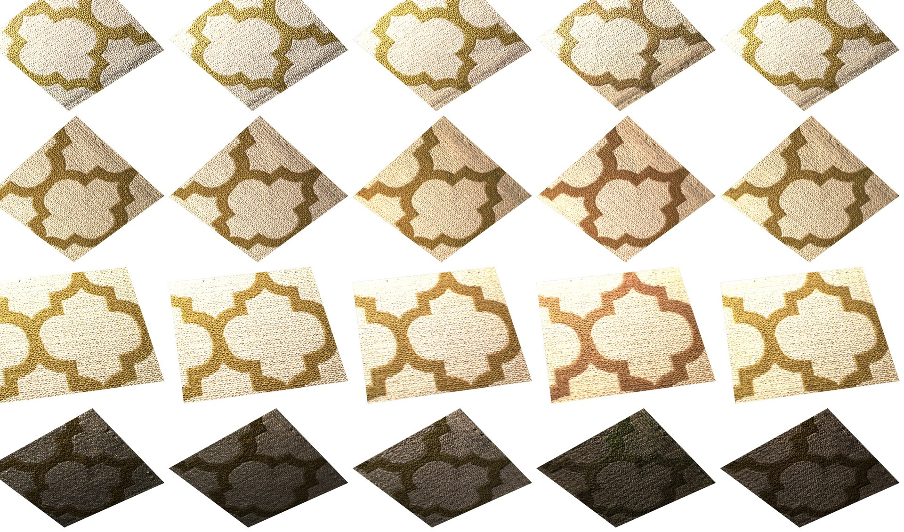

Qualitative results
Every qualitative comparison of the paper, at full resolution. Click a figure to open it.
Same protocol as the paper — the decoder, renderer and Stage 2 fitting are fixed and only the Stage 1 training data changes. Every recovered material is relit in a common scene: the same cloth mesh draped over a bar, with identical UV tiling, lighting and camera for every method, so any visible difference is due solely to the learned material. Columns are the decoder trained on RoboCloth, UBOFAB19 or MERL, the analytic PBR fit, and the ground truth where one exists.
UBO2014 — all 12 held-out materials
Materials 1–6
Materials 7–12
RoboCloth and UBOFAB19 test sets
We also reconstruct held-out materials from our own test set (in-domain) and from the UBOFAB19 test set (cross-dataset): for each material the decoder is frozen and a dense latent grid is optimized on a subset of the captured views, then relit in the same scene.
RoboCloth test set — five held-out materials
Renderingpath traced at 2048×2048, 512 spp, same scene and environment map.
UBOFAB19 test set — five held-out materials
Renderingpath traced at 2048×2048, 512 spp, same scene and environment map.
Image-space comparison
Image-space comparison. For the materials of our own test set we also compare each reconstruction directly with the captured photographs: the reconstruction is rendered into four of the material’s captured views with that view’s calibrated camera and light, and shown next to the photograph (GT); cells are cropped to the sample. The number in each cell is the PSNR (dB) of the rendered view against the photograph; the best of each view is in blue.
Image-space comparison — material 226

Renderingeach view with the capture’s calibrated camera and light, 16 spp (the paper’s test setting), at capture resolution; the same for the four materials below.
Image-space comparison — material 452

Image-space comparison — material 370

Image-space comparison — material 314

Image-space comparison — material 145
